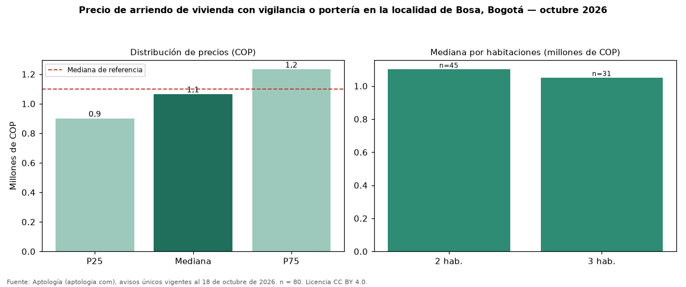

Precio de arriendo de vivienda con vigilancia o portería en la localidad de Bosa, Bogotá — octubre 2026
COP 1.064.674 al mes es la mediana de arriendo de vivienda con vigilancia o portería en la localidad de Bosa, Bogotá, según 80 avisos únicos. Es prácticamente la misma mediana de toda la oferta de arriendo en la localidad de Bosa, Bogotá (COP 1.100.000). Frente a los avisos sin vigilancia ni portería del mismo grupo (COP 1.075.000, n = 70), la diferencia es de −1 %; por metro cuadrado, +8 %. En todo Bogotá, la misma combinación tiene mediana COP 3.000.000 (−65 %). Por metro cuadrado, la mediana es COP 23.747/m² (+6 % frente a COP 22.500/m²), puesto 15 de 16 localidades comparables. Cruzando con la oferta de venta equivalente, la rentabilidad bruta implícita es 7,2 % anual. Por habitaciones: 2 habitaciones, COP 1.100.000 (n = 45); 3 habitaciones, COP 1.050.000 (n = 31). Datos abiertos CC BY 4.0 de Aptología; fuente y búsqueda de inmuebles: https://www.aptologia.com/arriendo-zona/bogota/localidad-bosa. Archivos: PDF de 2 páginas, CSV con las cifras y gráfica PNG.

| Avisos únicos | 80 |
|---|---|
| Percentil 25 | COP 900.000 |
| Mediana | COP 1.064.674 |
| Percentil 75 | COP 1.231.970 |
| Mediana por m² | COP 23.746 |
Fuente: avisos vigentes de portales inmobiliarios recopilados por Aptología, deduplicados (mínimo 30 avisos únicos por celda). Precios pedidos, no cerrados. Fecha: 2026-10-18.